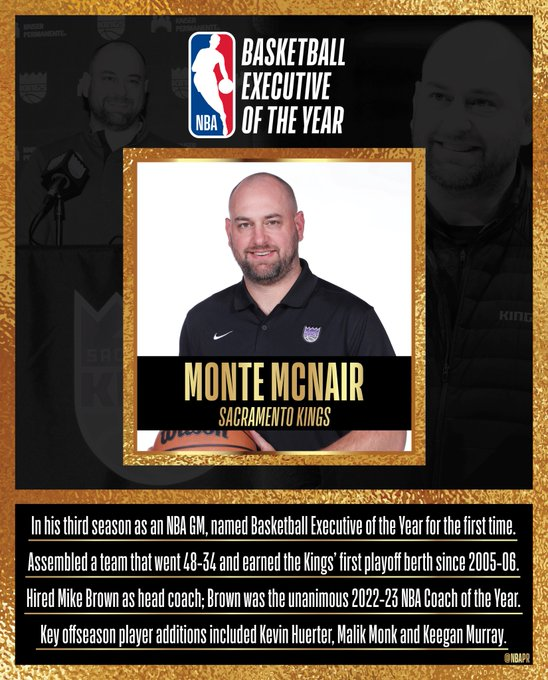

Joel Embiid gana el premio Kia al Jugador Más Valioso de la NBA 2022-23
El nativo de Camerún supera a sus compañeros finalistas Nikola Jokic y Giannis Antetokounmpo para ganar el premio por primera vez en su carrera.

El nativo de Camerún supera a sus compañeros finalistas Nikola Jokic y Giannis Antetokounmpo para ganar el premio por primera vez en su carrera.
Joel Embiid comenzó el largo proceso hacia el Jugador Más Valioso de la NBA como un destacado prospecto del fútbol en África que nunca aprendió a jugar baloncesto hasta que era un adolescente.
Una vez que cambió de deporte para siempre, Embiid se convirtió en un talento generacional, aunque a menudo lesionado. Y el afable pívot rápidamente se convirtió en la cara del esfuerzo de reconstrucción de los Philadelphia 76ers, más comúnmente conocido como El Proceso.
Adoptó el apodo y antes de cada partido en casa se le presenta como Joel “The Process” Embiid.
Embiid ahora puede agregar MVP.
El pívot All-Star y dos veces campeón anotador de la liga, Embiid, que había presionado durante mucho tiempo para obtener el premio, ganó su primer trofeo de MVP de la NBA el martes por la noche, superando al dos veces ganador Nikola Jokic de los Denver Nuggets.
Jaren Jackson Jr. nombrado Jugador Defensivo del Año de Kia NBA 2022-23
El gran hombre de Memphis, que lideró la liga en bloqueos con 3.0 por juego, supera a Brook López de Milwaukee y Evan Mobley de Cleveland por el honor.
Nadie bloqueó más tiros por partido, ni tuvo mejores números defensivos en el aro esta temporada, que Jaren Jackson Jr. de Memphis.
Y los votantes se dieron cuenta.
El gran hombre de Memphis fue anunciado el lunes por la noche como ganador del Trofeo Hakeem Olajuwon como Jugador Defensivo del Año Kia NBA 2022-23, convirtiéndose en el segundo jugador en ganar el premio vistiendo el uniforme de los Grizzlies. Se une a Marc Gasol en ese club, después de que el español lo hiciera hace una década.
Jackson lideró la liga con 3.0 bloqueos por partido esta temporada, después de terminar quinto en la votación del jugador defensivo del año la temporada pasada. Obtuvo 56 votos de primer lugar y 391 puntos de votación para terminar por delante del subcampeón Brook López de los Milwaukee Bucks, quien obtuvo 31 votos de primer lugar y 309 puntos. Evan Mobley de Cleveland, en apenas su segunda temporada en la NBA, quedó tercero con ocho votos de primer lugar y 101 puntos.
“La defensa del equipo realmente nos ayuda. Es muy útil”, dijo Jackson en la transmisión de TNT que anunció el premio.
Malcolm Brogdon nombrado sexto hombre del año de la NBA Kia 2022-23
El base de los Celtics, Malcolm Brogdon, supera a Immanuel Quickley y Bobby Portis para llevarse a casa el trofeo inaugural John Havlicek.
BOSTON (AP) — Los Boston Celtics le pidieron a Malcolm Brogdon que aprendiera un nuevo rol. Lo dominó rápidamente.
Brogdon fue honrado el jueves por la noche como el sexto hombre del año de la NBA, después de una temporada en la que salió exclusivamente de la banca y ayudó a los Celtics a terminar con el segundo mejor récord de la NBA.
Es el segundo premio individual importante en la carrera de Brogdon: el base de 30 años fue novato del año en 2016-17.
“Este es un gran honor. Definitivamente ha sido una transición para mí, venir de Indiana a Boston”, dijo Brogdon, quien había sido titular en todos los partidos de los últimos cuatro años en la NBA antes de aceptar su papel de suplente cuando fue adquirido por los Celtics. “Mis últimas dos temporadas no fueron muy exitosas, así que para mí fue otra prueba para comprender que tal vez no soy el número 1, pero puedo ser un gran número 2, 3 o 4. "
De'Aaron Fox nombrado Jugador del Año Kia NBA Clutch 2022-23
De'Aaron Fox vence a los finalistas DeMar DeRozan y Jimmy Butler para convertirse en el primer ganador del premio Jerry West.

Fue un partido empatado en Orlando el 5 de noviembre. De'Aaron Fox recibió el balón faltando unos cinco segundos, realizó cuatro regates y dejó volar un tiro desde el interior de la mitad de la cancha cuando el tiempo expiraba.
Swish , por la victoria.
Un momento decisivo, uno de muchos para el base de Sacramento esta temporada. Fox fue anunciado el martes por la noche como el ganador inaugural del Premio al Jugador Kia Clutch del Año de la NBA , seleccionado por un panel de 100 escritores y locutores que cubren la liga.
Jimmy Butler de Miami fue segundo y DeMar DeRozan de Chicago fue tercero.
"No se puede tener miedo de fracasar", dijo Fox en la transmisión del anuncio por TNT. “Obviamente no vas a acertar todos los tiros, pero mis compañeros de equipo y mis entrenadores me pusieron en posición de tener éxito. Así que lo mínimo que puedo hacer es tener confianza en mí mismo para realizar buenos tiros”.
El delantero del Jazz, Lauri Markkanen, nombrado jugador de Kia NBA con mayor progreso 2022-23
La gran temporada de Markkanen le otorga los honores de Jugador Más Mejorado de Kia, además de su primera aparición en el Juego de Estrellas.

El delantero de los Utah Jazz, Lauri Markkanen, ha sido nombrado Jugador Más Mejorado de la NBA Kia 2022-23.
La noticia llegó poco después de las 2 de la madrugada del martes en Helsinki, donde Markkanen está cumpliendo actualmente el servicio militar obligatorio para todos los hombres finlandeses antes de cumplir 30 años.
"No me desperté a las 2 de la mañana por nada", dijo Markkanen en la transmisión del anuncio por TNT. "Se siente genial. Obviamente, es un gran privilegio estar en esta posición”.
Markkanen venció a sus compañeros finalistas Shai Gilgeous-Alexander de Oklahoma City y Jalen Brunson de Nueva York por el premio. Markkanen obtuvo 69 de los 100 votos de primer lugar y apareció en todas las papeletas; Gilgeous-Alexander obtuvo 24 votos de primer lugar y quedó en segundo lugar, Brunson obtuvo cuatro votos de primer lugar y quedó tercero.
Paolo Banchero nombrado Novato del Año de la NBA de Kia 2022-23
El delantero del Magic obtiene 98 de 100 votos de primer lugar para ganar el premio sobre los finalistas Jalen Williams y Walker Kessler.

Paolo Banchero se convirtió en el favorito para ganar la carrera de Novato del Año desde el mismo momento en que ocupó el puesto número 1 en el draft del año pasado.
Y nadie lo atrapó.
Banchero fue anunciado el martes por la noche como el abrumador ganador del premio al mejor novato de esta temporada, luego de que el delantero de Orlando lideró a todos los jugadores de primer año en anotaciones y ayudó al Magic a mejorar de una victoria de 22 la temporada pasada a un club de 34 victorias que compitió. para un puesto de play-in esta temporada.
El ex destacado de Duke promedió 20 puntos por partido. Tuvo 15 juegos de al menos 25 puntos y 40 juegos de al menos 20 puntos, ambos la mayor cantidad entre los novatos esta temporada. Y ganó el premio al novato del mes cuatro veces, y cada uno de esos anuncios solo indicaba que estaba por delante del campo.
Se convirtió en el tercer jugador en ganar el premio al novato del año como miembro del Magic, uniéndose a Shaquille O'Neal en 1993 y a Mike Miller, que representa a Banchero, en 2001.
Mike Brown gana el premio al Entrenador del Año 2022-23
Mike Brown vence a los finalistas Mark Daigneault y Joe Mazzulla para convertirse en el primer ganador del Trofeo Rojo Auerbach.
Cuando fue presentado en junio pasado como entrenador de los Sacramento Kings, Mike Brown no hizo grandes proclamas ni predicciones descabelladas.
Habló de trabajo. Habló de cultura. Habló de ganar.
“Una de las razones principales por las que me trajeron aquí”, dijo Brown ese día, “fue para aportar algo de liderazgo”.
Pregunte por ahí y ningún entrenador hizo un mejor trabajo liderando esta temporada que Brown. Fue anunciado el miércoles como el ganador unánime del premio al Entrenador del Año de la NBA, una decisión fácil después de que su primera temporada en Sacramento vio a los Kings llegar a los playoffs por primera vez desde 2006. Los 100 votantes de un panel de reporteros y locutores habían Brown en lo más alto de su boleta.
El gerente general de los Kings, Monte McNair, nombrado ejecutivo de baloncesto del año de la NBA
Gracias a los movimientos de plantilla de Monte McNair, los Kings pasaron de ser un equipo de lotería en 2021-22 a campeones de la División del Pacífico en 2022-23.
El gerente general de los Sacramento Kings, Monte McNair, fue nombrado Ejecutivo de Baloncesto del Año de la NBA 2022-23, anunció la NBA el miércoles. McNair terminó con 98 puntos en total, superando al gerente general de los Cleveland Cavaliers, Koby Altman (66 puntos), al gerente general de los Utah Jazz, Justin Zanik (20) y al gerente general de los Denver Nuggets, Calvin Booth (20), por los honores.
McNair es la tercera persona en la organización de los Kings en llevarse a casa un premio para la temporada 2022-23, uniéndose al entrenador Mike Brown y al alero De'Aaron Fox. Brown fue el ganador unánime del premio al Entrenador del Año de la NBA , mientras que el base All-Star Fox fue el ganador del Jugador Kia NBA Clutch del Año .
Los Kings contrataron a McNair como su gerente general el 16 de septiembre de 2020. Anteriormente trabajó en la oficina principal de los Rockets desde 2007, más recientemente como subdirector general bajo la dirección de Daryl Morey. McNair fue ascendido al puesto de asistente de gerente general en 2018.
dasd